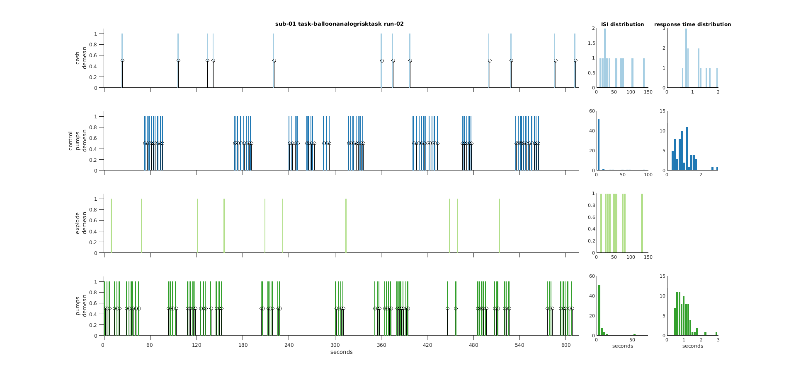

Utility functions
- namespace bids.util
- bids.util.create_data_dict(varargin)
Create a JSON data dictionary for a TSV file.
Levels in columns that may lead to invalid matlab structure fieldnames are renamed. Hence the output may need manual cleaning.
Descriptions may be added for columns if a match is found in the BIDS schema: for example: trial_type, onset…
To create better data dictionaries, please see the tools for hierarchical event descriptions.
USAGE:
data_dict = bids.util.create_data_dict(tsv_file, ... 'output', [], ... 'schema', true, ... 'force', false, ... 'level_limit', 10, ... 'verbose', true);
- Parameters:
output – filename for the output files. Can pass be a cell char of paths
force (
logical) – If set tofalseit will not overwrite any file already present in the destination.schema (
logical or a schema object) – If set totrueit will use the schema to try to find definitions for the column headerslevel_limit – Maximum number of levels to list. Defaults to 10;
Example
BIDS = bids.layout(pth_bids_example, 'ds001')); tsv_files = bids.query(BIDS, 'data', ... 'sub', '01', ... 'suffix', 'events'); data_dict = bids.util.create_data_dict(tsv_files{1}, ... 'output', 'tmp.json', ... 'schema', true);
- bids.util.create_participants_tsv(varargin)
Creates a simple participants tsv for a BIDS dataset.
USAGE:
output_filename = bids.util.create_participants_tsv(layout_or_path, ... 'use_schema', true, ... 'tolerant', true, ... 'verbose', false)
- Parameters:
layout_or_path (
path or structure)use_schema (
logical)tolerant (
logical) – Set totrueto turn validation errors into warningsverbose (
logical) – Set totrueto get more feedback
- bids.util.create_readme(varargin)
Create a README in a BIDS dataset.
USAGE:
bids.util.create_readme(layout_or_path, is_datalad_ds, ... 'tolerant', true, ... 'verbose', false)
- Parameters:
layout_or_path (
path or structure)tolerant (
logical) – Set totrueto turn validation errors into warningsverbose (
logical) – Set totrueto get more feedback
- bids.util.create_scans_tsv(varargin)
Create a simple scans.tsv for each participant of a BIDS dataset.
USAGE:
output_filename = bids.util.create_scans_tsv(layout_or_path, ... 'use_schema', true, ... 'tolerant', true, ... 'verbose', false)
- Parameters:
layout_or_path (
path or structure)use_schema (
logical)tolerant (
logical) – Set totrueto turn validation errors into warningsverbose (
logical) – Set totrueto get more feedback
- bids.util.create_sessions_tsv(varargin)
Create a simple sessions.tsv for each participant of a BIDS dataset.
USAGE:
output_filename = bids.util.create_sessions_tsv(layout_or_path, ... 'use_schema', true, ... 'tolerant', true, ... 'verbose', false)
- Parameters:
layout_or_path (
path or structure)use_schema (
logical)tolerant (
logical) – Set totrueto turn validation errors into warningsverbose (
logical) – Set totrueto get more feedback
- bids.util.download_ds(varargin)
Downloads a BIDS data for a demo from a given source
USAGE:
output_dir = download_moae_ds('source', 'spm', ... 'demo', 'moae', ... 'out_path', fullfile(bids.internal.root_dir(), 'demos'), ... 'force', false, ... 'verbose', true, ... 'delete_previous', true);
SPM:
bids.util.download_ds('source', 'spm', 'demo', 'moae') bids.util.download_ds('source', 'spm', 'demo', 'facerep') bids.util.download_ds('source', 'spm', 'demo', 'eeg')
—
BRAINSTORM:
bids.util.download_ds('source', 'brainstorm', 'demo', 'ieeg') bids.util.download_ds('source', 'brainstorm', 'demo', 'meg')
ieeg: SEEG+MRI: 190 Mb
meg: MEG+MRI+DWI: 208 Mb
ecog: SEEG+ECOG+MRI: 897 Mb
meg_rest: MEG resting-state: 5.2 Gb
- bids.util.jsondecode(file, varargin)
Decode JSON-formatted file
USAGE:
json = bids.util.jsondecode(file, opts)
- Parameters:
file (
char) – name of a JSON file or JSON charopts (
structure) – structure of optional parameters (only with JSONio):
opt.replacementStyle: char to control how non-alphanumeric characters are replaced.'underscore'Default'hex''delete''nop'
- Returns:
- json:
JSON structure
- bids.util.jsonencode(varargin)
Encode data to JSON-formatted file
USAGE:
bids.util.jsonencode(filename, json, opts)
- Parameters:
filename (
char) – JSON filenamejson (
structure) – JSON structure
USAGE:
S = bids.util.jsonencode(json, opts)
- Parameters:
json (
structure) – JSON structureopts – optional parameters
- Returns:
- S:
(char) serialized JSON structure
- bids.util.mkdir(varargin)
Make new directory trees.
USAGE:
sts = bids.util.mkdir(dir, ...)
- Parameters:
dir (
character array, or cell array of strings) – directory structure to create- Returns:
- sts:
status is
trueif all directories were successfully created or already existing,falseotherwise.
Example
bids.util.mkdir('dataset', {'sub-01', 'sub-02'}, {'mri', 'eeg'});
Based on spm_mkdir from SPM12
- bids.util.plot_events(varargin)
USAGE:
plot_events(events_files, 'include', include, ... 'trial_type_col', 'trial_type', ... 'model_file', path_to_model)
- Parameters:
events_files (
path or cellstr of paths) – BIDS events TSV files.include (
char or cellstr) – Optional. Restrict conditions to plot.trial_type_col (
char or cellstr) – Optional. Defines the column where trial types are listed. Defaults to ‘trial_type’model_file (
fullpath) – Optional. Bids stats model file to apply to events.tsv before plotting
Example:
data_dir = fullfile(get_test_data_dir(), 'ds108'); BIDS = bids.layout(data_dir); events_files = bids.query(BIDS, ... 'data', ... 'sub', '01', ... 'run', '01', ... 'suffix', 'events'); include = {'Reapp_Neg_Cue', 'Look_Neg_Cue', 'Look_Neutral_Cue'}; bids.util.plot_events(events_files, 'include', include);

output of plot_events
- bids.util.tsvread(filename, field_to_return, hdr)
Load text and numeric data from tab-separated-value or other file.
USAGE:
file_content = tsvread(filename, field_to_return, hdr)
- Parameters:
filename (
char) – filename (can be gzipped) {txt,mat,csv,tsv,json}field_to_return – name of field to return if data stored in a structure [default:
'']; or index of column if data stored as an arrayhdr (
logical) – detect the presence of a header row for csv/tsv [default:true]
- Returns:
- file_content:
corresponding data array or structure
Based on spm_load.m from SPM12.
- bids.util.tsvwrite(filename, var)
Save text and numeric data to tab-separated-value file
USAGE:
tsvwrite(filename, var)
- Parameters:
filename (
string)var (
data array or structure)
Based on spm_save.m from SPM12.